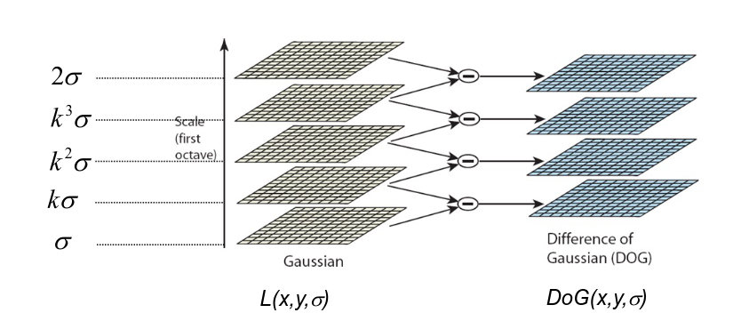
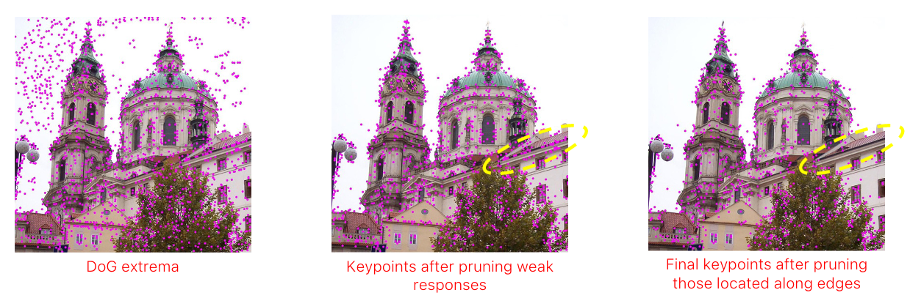

Difference of gaussian (DOG)
Very similar to Multi-Scale Feature Detection but, instead of computing the derivatives, we can just compute the difference between the image with a Gaussian filter and the image itself with a different Gaussian filter. This is as effective and much faster.

Extrema detection
a point (x, y, σ) is detected as a keypoint iff its DoG is higher (lower) than that of the 26 neighbors (8 at the same scale and 18=9+9 at the two nearby scales) in the (x, y, σ) space.
According to the original paper, the best number of octave is 3, the initial value of should be 1.6 and the input image should be enlarged by a factor of 2.
